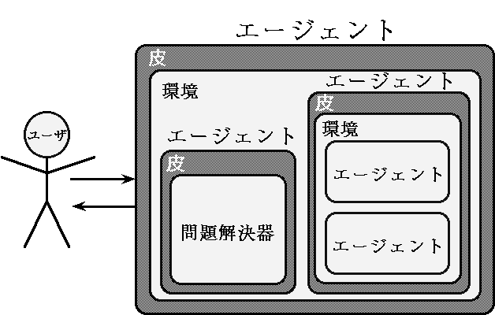

(89) 異種分散協調問題解決システム : Helios
マ シ ン：UNIXマシン
環 境：UNIX
言 語：C
ソース量：0.9 MB
文 書：ユーザーズマニュアル (日本語・英語)
概要
Heliosは、データベース、制約解消系など様々な問題解決器間のメッセージ通
信を実現することにより、異種分散協調問題解決系の構成を支援するシステム
である。
特徴
異種の問題解決器を各々エージェントとして定義し、エージェントに協調機能
を組み込むことにより、分散環境上に存在する様々な問題解決器が協調して問
題を解く異種分散協調問題解決系を構成することが可能になる。
問題解決器は、各々の異種性を吸収するモジュールである皮でおおうことでエー
ジェントにすることができる。環境はエージェント間のメッセージ通信を実現
する。環境およびその中に含まれるエージェントにより、異種分散協調問題解
決器が構築できる。環境も皮でおおうことでエージェントにすることができる。
Helios は、皮と環境を定義する言語 CAPL ( CAPsule Language ) と ENVL
( Environment Language ) と、エージェントが協調するための機能を提供す
る。

機能
Helios は分散環境上で動作する。また、以下に示す機能を持つ。
- 異種の言語で作成されたプログラム／システム間の通信
- 既存の問題解決器をボトムアップに組み合わた問題解決系の構築
- 分散して存在するデータベースや知識ベースによる大規模データベースや
大規模知識ベースの構築
- 異種の制約解消系を組み合わせることによる、複数のドメインにまたがる
制約を扱う制約解消系の構築
- マルチエージェントシステムや分散協調問題解決器の構築
ＦＴＰ
- README.
- 異種分散協調問題解決システム : Helios [3,700K]

www-admin@icot.or.jp